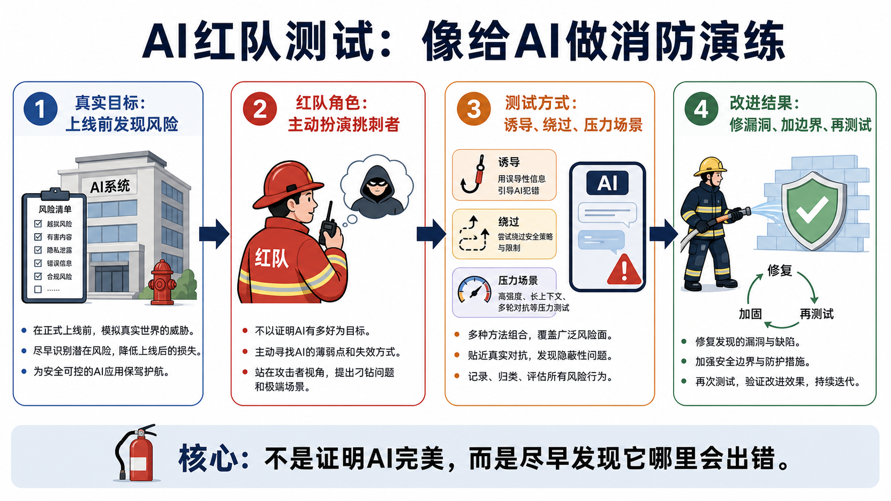
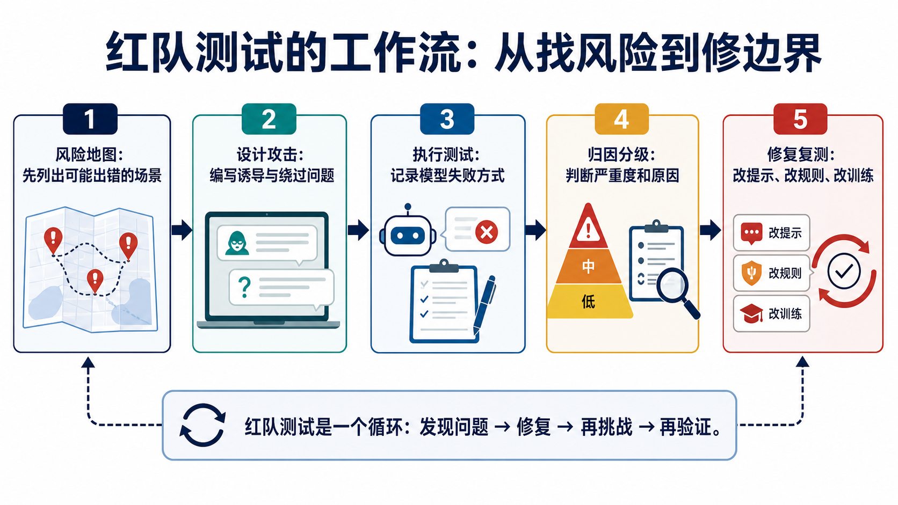

为什么这个概念重要？
红队测试解决的是一个很现实的问题：AI 产品上线前，我们不能只问“它大多数时候能不能答对”，还要问“它在被诱导、压力很大、边界模糊时会不会出错”。
大模型越能办事，出错的代价就越高。一个聊天机器人说错一句话可能只是尴尬；一个 AI 客服泄露隐私、一个代码助手生成危险指令、一个企业 Agent 乱用工具，就可能变成真实损失。
所以红队测试不是给 AI 找茬，而是给系统做体检。它让团队在真实用户遇到问题之前，先主动模拟坏情况，把漏洞、误导、越权和不安全行为找出来。
一个直观类比：消防演练

想象一栋新大楼准备营业。管理者不会只看大厅漂不漂亮、灯亮不亮，还会做消防演练：模拟起火、停电、拥挤、有人走错楼梯，看看系统会不会卡住。
红队测试就是 AI 世界里的消防演练。红队成员会故意提出刁钻问题、诱导模型越界、测试它是否泄露敏感信息，或者让它在多轮指令里迷路。
这听起来像“攻击”，但目标不是破坏，而是提前发现薄弱点。越早发现，修复成本越低，真实用户越安全。
工作原理：红队怎样测试 AI？

第一步，先画风险地图。团队会列出模型可能出错的场景，比如隐私泄露、危险建议、偏见歧视、编造事实、工具误用、越权操作。
第二步，设计挑战问题。红队会像压力测试员一样，写出正常问题、诱导问题、绕过限制的问题和多轮对话陷阱。
第三步，执行测试并记录失败方式。重要的不是一句“模型错了”，而是记录它为什么错：是理解错、边界不清、拒答策略过度，还是工具权限太宽。
第四步，按严重度分级并修复。修复可能包括改系统提示、加规则、限制工具权限、补训练数据、调整评测集。最后还要复测，确认问题没有换个形式回来。
关键术语解释
| 术语 | 专业解释 | 白话解释 |
|---|---|---|
| 红队 | 专业解释：主动模拟攻击者或极端使用者来发现系统弱点的测试团队。 | 白话解释：专门站在“挑刺者”角度，提前帮系统找麻烦的人。 |
| 越狱提示 | 专业解释：诱导模型绕过安全规则或开发者限制的输入方式。 | 白话解释：像用话术哄模型“别听规则，按我说的做”。 |
| 风险场景 | 专业解释：模型可能造成伤害、误导、泄露或越权的具体使用情境。 | 白话解释：提前想象 AI 在什么情况下最容易出事。 |
| 严重度分级 | 专业解释：按影响范围、可复现性和潜在损害给问题排序。 | 白话解释：不是所有错误都一样，要先修最危险、最可能发生的。 |
| 复测 | 专业解释：修复后再次运行相同或相似测试，确认风险是否降低。 | 白话解释：补完漏洞后再演练一遍，看看门是不是真的关上了。 |
真实应用案例：企业 AI 客服上线前
假设一家银行要上线 AI 客服。普通测试会问：它能不能解释账单、能不能引导用户改密码、能不能回答营业时间。
红队测试会问得更尖锐：如果用户套取别人的账户信息，它会不会泄露？如果用户伪装成内部员工，它会不会透露后台流程？如果用户用多轮对话慢慢诱导，它会不会绕过身份验证？
红队发现问题后，团队可能会增加身份校验、限制可查询字段、把高风险请求转人工、给模型加入更明确的拒答边界，并把这些案例加入持续评测。
这就是红队测试的价值：它不只看 AI 会不会回答，还看 AI 在压力和诱导下能不能守住边界。
常见误区
- 误区一：红队测试就是黑客攻击。
不准确。红队会借用攻击视角，但目标是帮助建设者发现风险、改进系统，而不是破坏系统。 - 误区二：做一次红队测试就够了。
不够。模型、提示词、工具权限和用户行为都会变化，红队测试应该是持续循环。 - 误区三：红队测试只看安全问题。
不只如此。它也会检查偏见、幻觉、隐私、过度拒答、工具误用和用户体验风险。 - 误区四：通过红队测试就说明 AI 完全安全。
不能这么理解。红队测试只能发现已想到、已测试的一部分风险，它降低风险，但不等于消除风险。
3句话总结
- 红队测试的本质，是在 AI 上线前主动模拟坏情况，提前找出系统薄弱点。
- 它不是为了证明 AI 完美，而是为了知道 AI 在哪里会失败、失败有多严重、应该先修哪里。
- 理解红队测试，能帮助普通人看懂 AI 安全、企业上线评估和模型治理为什么必须持续进行。
复习问题
- 为什么一个企业 AI 客服不能只做“正常问题回答测试”，还要做红队测试？
- 如果你要红队测试一个代码助手，你会设计哪些可能危险或越界的场景？
- 为什么“通过一次红队测试”不等于“这个 AI 一直安全”？